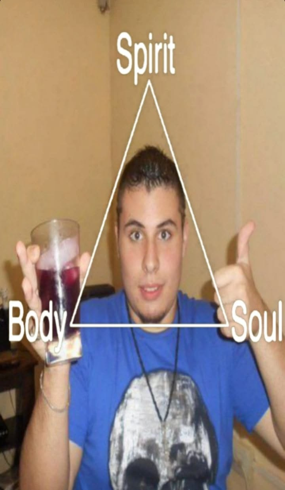

🎮
Videojuegos
Me encantan los videojuegos y todo lo que los rodea: jugar, descubrir cosas nuevas y compartirlas.
HOLA, SOY
@f3rchuu
Soy Fer, sos bienvenido a mi página personal donde mostraré parte de lo que hago, a qué me dedico y algunas de las cosas de todos los días.

UN POCO SOBRE MÍ
Soy Fer y esta es mi pequeña esquina de internet. Acá voy a ir mostrando parte de lo que hago, lo que me interesa, proyectos, cosas que aprendo y algunas de las cosas que pasan en mi día a día.
La idea es que este sitio vaya creciendo conmigo. Por eso también armé un blog donde voy a poder publicar cosas sin tener que editar la página principal.
LO QUE ME GUSTA
Me encantan los videojuegos y todo lo que los rodea: jugar, descubrir cosas nuevas y compartirlas.
La música es parte del día a día. Siempre hay algún tema sonando de fondo.
Me interesa todo lo relacionado con software, tecnología, herramientas y aprender cómo funcionan las cosas.
LO ÚLTIMO
ENCONTRAME POR AHÍ